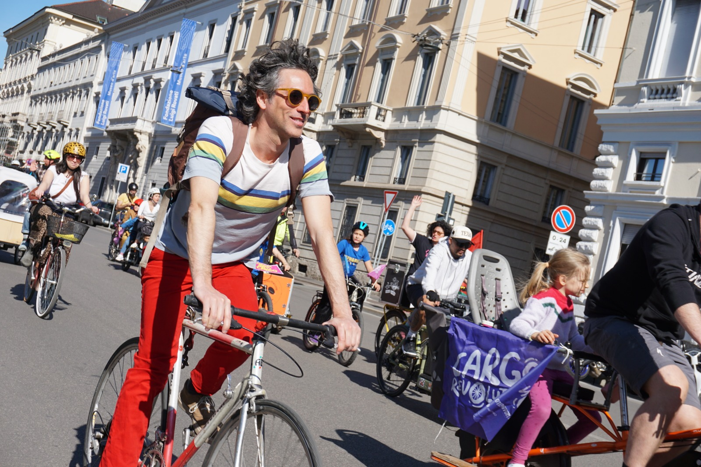

Beyond the music
Extra
In striving to develop my artistic project, I felt it was essential to deconstruct the notion that the value of a musical performance depends only on technical skill or on adherence to a pre-existing model. Contemporary society, often held captive by capitalist logic, tends to prioritise professional ‘labels’ or the finished product, neglecting the intrinsic value of the process and the intention that informs the artistic act. In the musical sphere, this often translates into a sterile competition aimed at perfect imitation, a paradigm that limits the capacity for listening and closes the doors to otherness. My research takes the opposite perspective: musical action is understood here as a practice aimed at valuing diversity as a resource and subjectivity as a generative element. In this sense, I embrace Christopher Small’s vision: ‘Musicking’ transforms music from a static ‘object’ into a relational ‘process’. A musician’s quality therefore does not lie in the ability to replicate a canon, but in the capacity to assimilate and transform the materials encountered through the filter of one’s own unique experience. For this reason, I felt it essential to share in this space some key elements, people and realities present in my life that certainly contribute profoundly to the development of my human and musical thinking.
Bicycles

For me, the bicycle is a symbol of respect and care for one’s own space and time. I love getting around my city by bike and try to use it as much as possible. It helps reduce pollution, gives people more breathing space, keeps us in touch with our surroundings, brings out the city’s subtle sounds, and allows us to take our time as we wander the streets and discover the city’s hidden corners. In my city, there are some important organisations that look after their spaces to bring more smiles. Some raise awareness about road safety, others find different ways, and still others create them.
Circus
The body has always been part of my daily choices and my personality. I have never been able to treat it as a simple shell. I have always enjoyed taking care of it and cultivated it to the best of my ability, making it part of my intellectual and emotional exploration. This is why movement and sport have always been part of my daily life, even in a playful way, allowing me to discover worlds that are not familiar to everyone. For years, I have been dedicated to circus performances linked to the schools of Nouveau Cirque, which try to bring the body into an emotional and artistic vision, rather than a purely physical one. A practice that has also fed my musical exploration. There are a few schools in my city that courageously offer something different because, sometimes, we are too caught up in our own lives, and we need to dream.